Jodenrijtje
De opgraving legde vier laatmiddeleeuwse kamerwoningen aan de steeg in plattegrond vast. Op p. 107 van het Stegenboek is de gevelrij vóór 1976 vergeleken met de steegwand na 1978.
Alley Up! · Architectonisch onderzoeksdossier
Steenweg 59 — Oudegracht 137
Een warenhuis tussen twee straten en twee stegen. Wat gebeurde er met het bouwblok toen afzonderlijke panden plaatsmaakten voor één winkel, en waar kan de steeg opnieuw toegang bieden?
Binnenstad · Utrecht

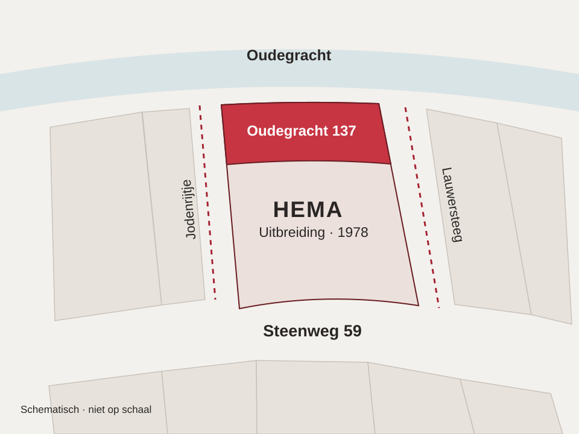
Winkelentree aan de Steenweg ↗ · Gebouwfoto van Tom Wolthuis ↗
Op de luchtfoto uit 1977 is het open bouwterrein aan de Steenweg te zien. Vergelijk de afzonderlijke daken in 1930 en het grote winkelvolume op het luchtbeeld van 2025. Alle drie tonen dezelfde uitsnede.
Oudere huizen aan de Oudegracht worden achter een eclectische gevel samengevoegd. De afzonderlijke kappen blijven herkenbaar.
Vijf winkelpanden aan de Steenweg maken plaats voor uitbreiding. Oud-Utrecht protesteert tegen het verdwijnen van de kleinschalige bebouwing.
T.J. Hoekstra onderzoekt van 8 december tot 15 februari het terrein tussen Steenweg, Lauwersteeg en Jodenrijtje.
De nieuwbouw aan de Steenweg wordt intern verbonden met het bestaande winkelgedeelte aan de Oudegracht.

Jean Penders beschreef in 1977 hoe de nieuwe gevel aan de Steenweg het ritme van vijf panden moest oproepen. Zijn kritiek richtte zich ook op de schaal van de nieuwe steeggevels.
Achter de gevel aan de Oudegracht liggen drie oudere panden met kelders en eigen kappen. Het winkelgedeelte aan de Steenweg heeft drie bovengrondse bouwlagen en een kelder. Trappen en liften verbinden de verschillende vloerniveaus.
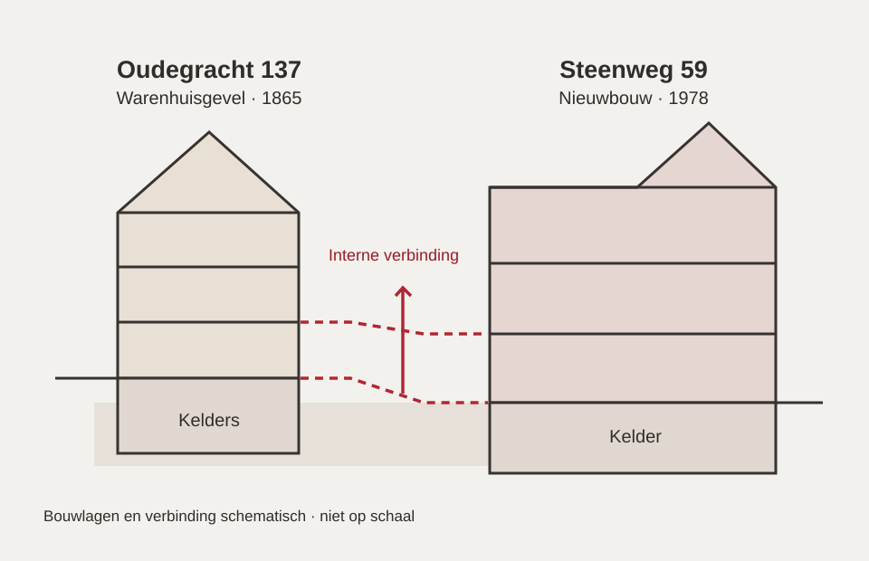
De monumentbescherming aan de Oudegracht reikt 17 meter vanaf de rooilijn. Het BREEAM-dossier vermeldt 5.083 m² bruto vloeroppervlak voor het beoordeelde gebouwdeel. De bovenliggende woningen vallen buiten die afbakening.
Monument 514234 ↗ · Gebouwdossier ↗
De doorsnede is een onderzoeksschets. Originele bouwtekeningen met maatvoering, constructie en ontsluiting zijn nog niet opgenomen.
Is een entree vanuit een steeg denkbaar voor een programma boven of achter de winkel? De twee steegwanden vormen het vertrekpunt om deuren, niveauverschillen en bestaande routes in kaart te brengen.

De opgraving legde vier laatmiddeleeuwse kamerwoningen aan de steeg in plattegrond vast. Op p. 107 van het Stegenboek is de gevelrij vóór 1976 vergeleken met de steegwand na 1978.
Hoekstra legde aan deze zijde resten van vroegere huizen en grondbogen vast. In het huidige blok is de steeg een smalle lijn langs de diepe winkelmassa.
Zoek op jaartal, straat, maker of trefwoord. Foto’s en tekeningen uit de publicaties zijn via hun bron te raadplegen.
Vijftien unieke overzichtstekeningen uit Het Utrechts Archief. Klik op een afbeelding om te vergroten, of open de volledige originele scan via Google Drive.
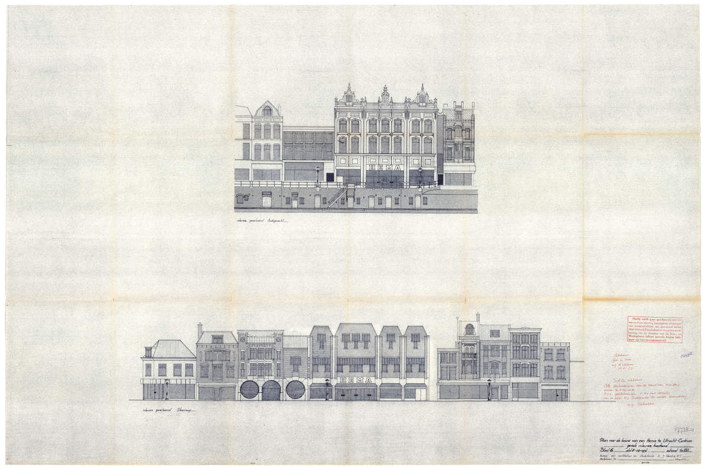
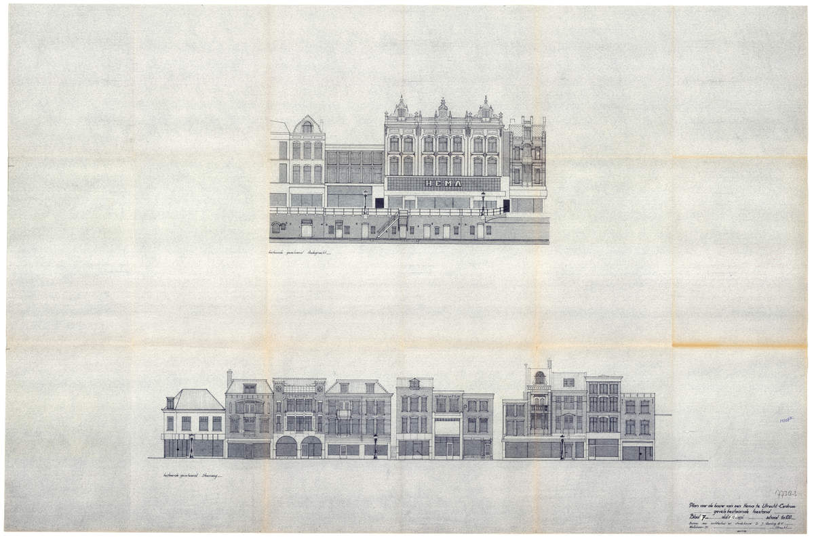
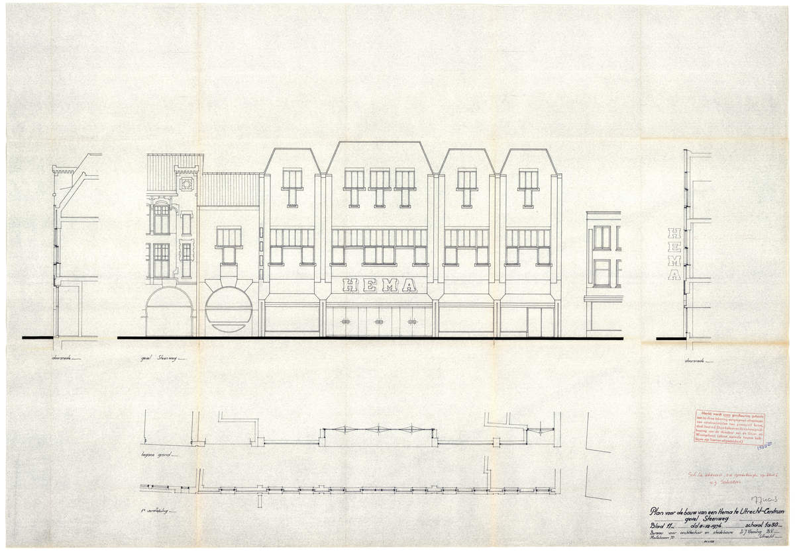
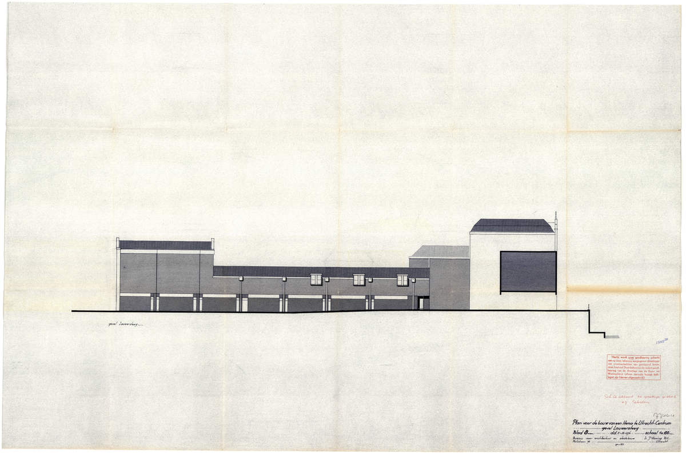
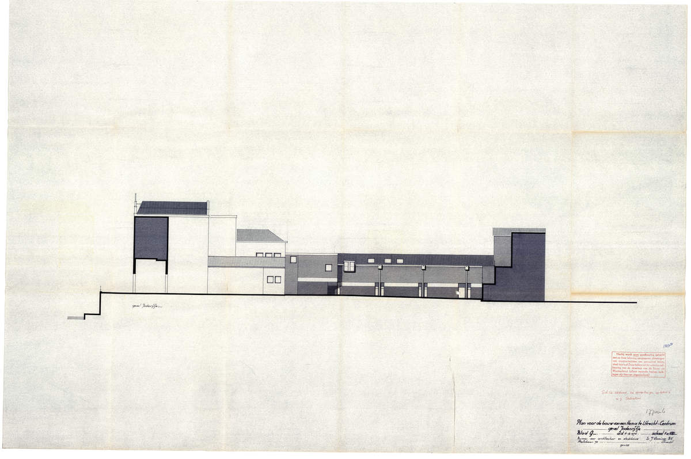
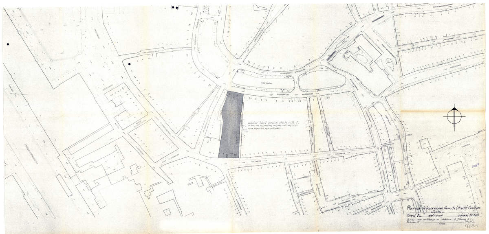
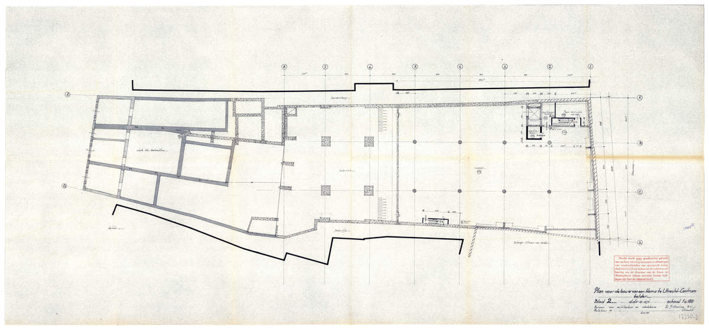
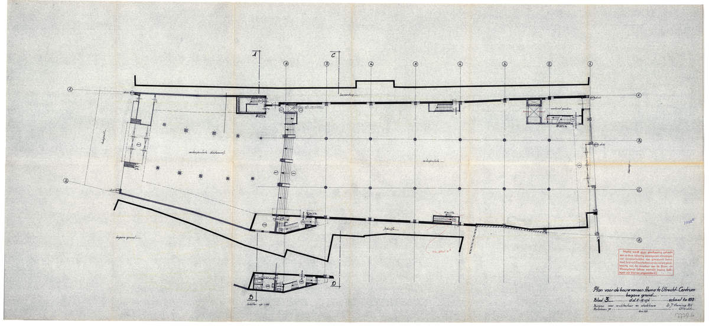
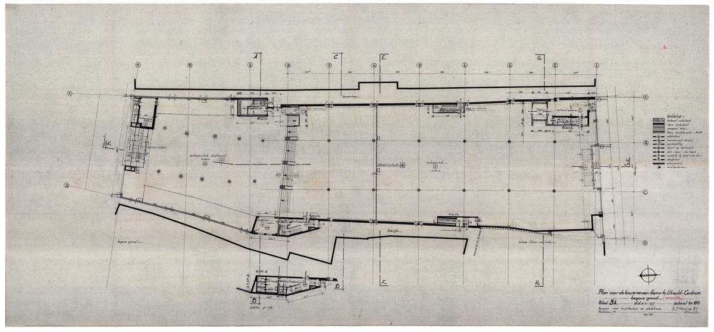
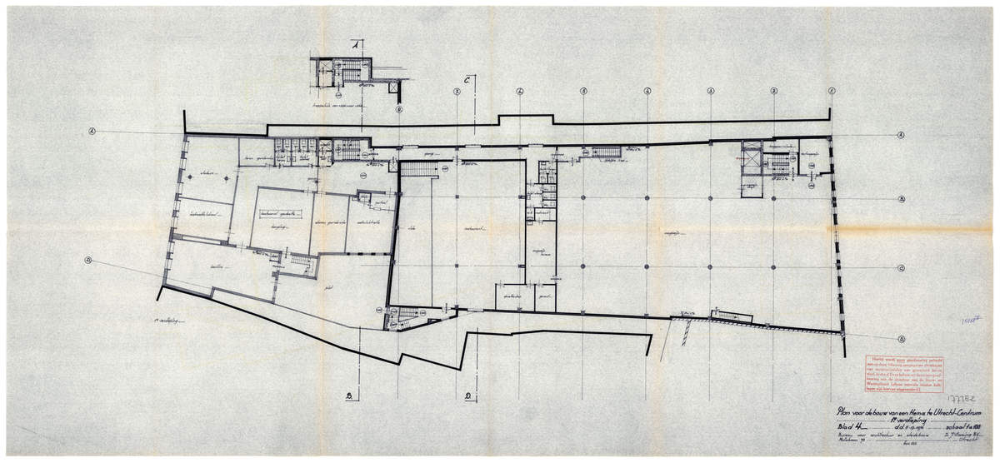
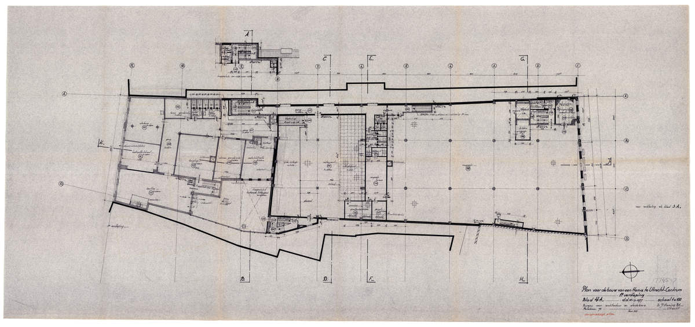
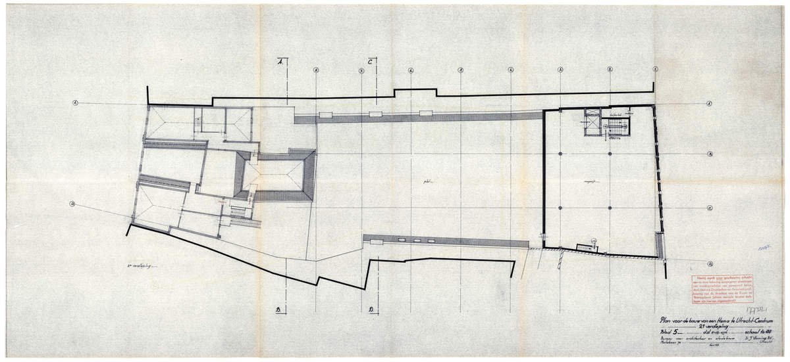
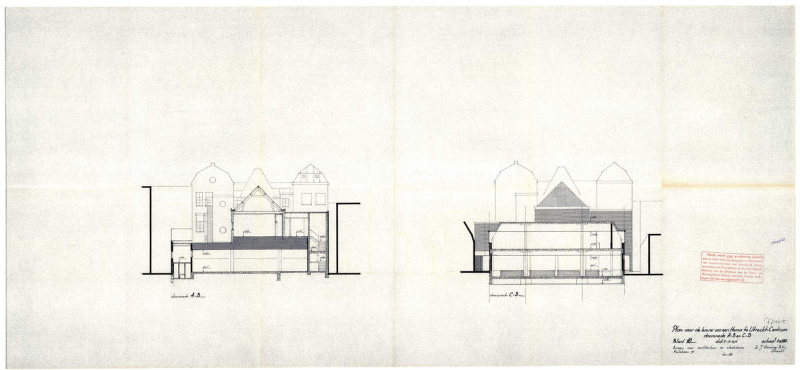
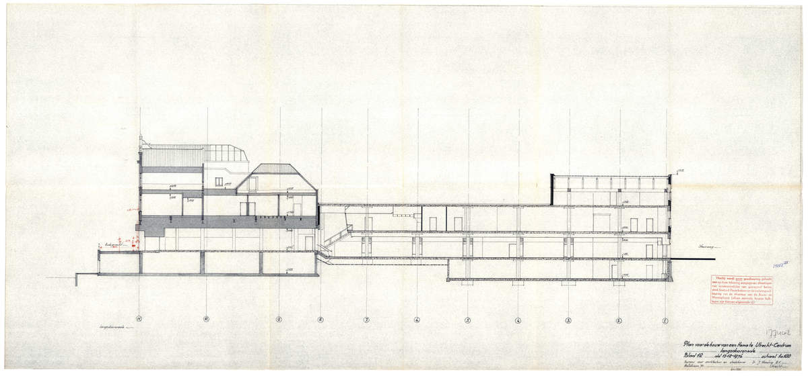
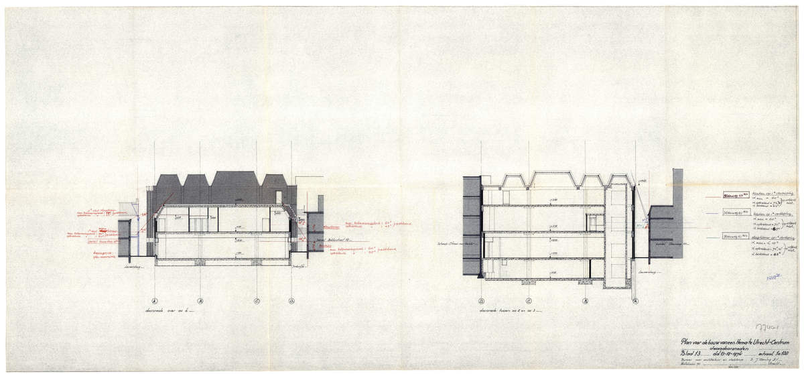
Steenweg en Oudegracht, Utrecht · Gemeente Utrecht
Steenweg, Utrecht · Jaarboek Oud-Utrecht, vanaf p. 154
Jodenrijtje, Utrecht · Gemeentelijke Fotodienst Utrecht, opgenomen in Maandblad Oud-Utrecht 1977, pp. 78–80
Steenweg, Utrecht · Ton Schollen / RCE, 20212285
Steenweg, Utrecht · Jean Penders, Maandblad Oud-Utrecht, pp. 61–62
Steenweg, Utrecht · T.J. Hoekstra, Maandblad Oud-Utrecht 1980, afb. 29–30
Lauwersteeg, Utrecht · Maandblad Oud-Utrecht 1980, pp. 16–24
Steenweg en Oudegracht, Utrecht · Gemeente Utrecht
Jodenrijtje, Utrecht · De stegen in het slop, herdrukt in het Stegenboek, p. 107
Steenweg 51, Utrecht · Ton Schollen / RCE, 20306004
Oudegracht, Utrecht · Rijksdienst voor het Cultureel Erfgoed, 514234
Oudegracht 137, Utrecht · CumulusNL / Wikimedia Commons
Steenweg, Utrecht · BREEAM-NL, 4068-BIU-2021
Steenweg en Oudegracht, Utrecht · Samenwerkingsverband Beeldmateriaal / PDOK
Drie warenhuizen waarin de verhouding tussen winkelvloer, wonen en stedelijke route op verschillende manieren is uitgewerkt.
Amsterdam · 2019
Een historisch warenhuis en omliggende panden samengebracht in één complex. Een referentie voor de aansluiting van een groot programma op de bestaande straatwand.
Bekijk project op Divisare ↗Almere · 2007
72 woningen boven de HEMA. Inspringende gevels brengen daglicht in het diepe volume en geven de woningen eigen buitenruimte.
Bekijk project op Divisare ↗Parijs · 2021
Een binnenstraat en drie hoven verbinden de Rue de Rivoli met de Seine. Een referentie voor routes dwars door het warenhuis.
Bekijk project op Divisare ↗Publicaties, registers en beeldcollecties die voor dit dossier zijn geraadpleegd.